Capítulo 9 Métricas da paisagem e fragmentos
As métricas deste capítulo são calculadas na grade original dos mapas, sem reprojeção. Áreas e bordas são medidas sobre o elipsoide, e não é preciso informar a zona UTM.
Métricas por ano
biomastats_metrics() reclassifica os mapas para as classes de interesse e,
ano a ano, calcula área, bordas, número de fragmentos e índice de agregação.
Vamos acompanhar a formação florestal:
metricas <- biomastats_metrics(mapas, classes = 3, metrics = "keep.all")
metricas$ai_plot
metricas$fragments_number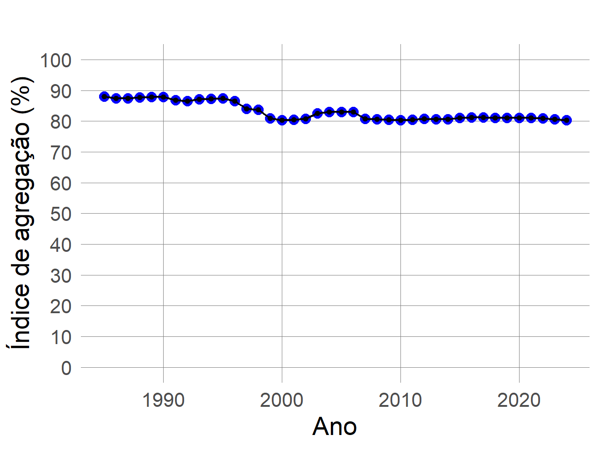
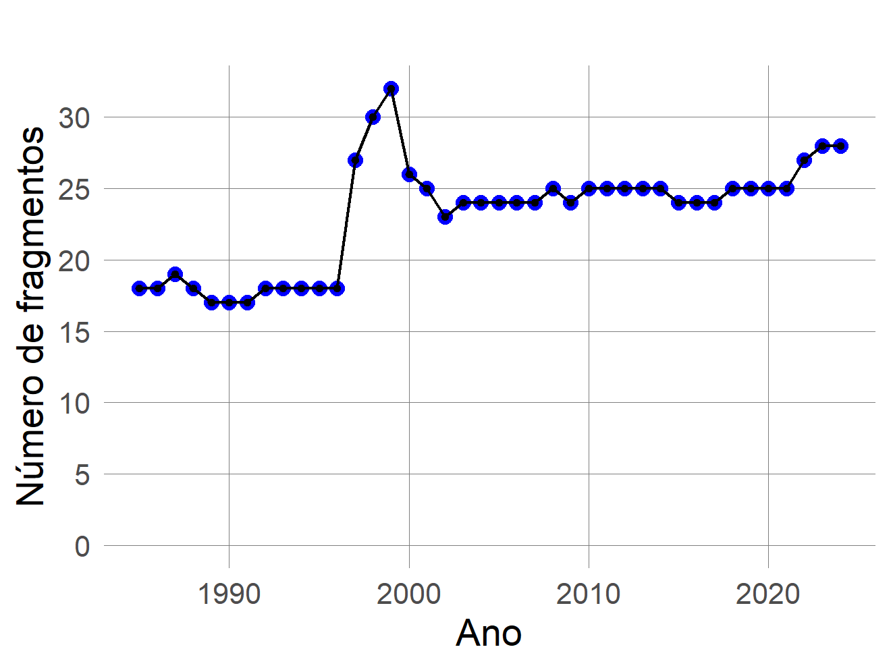
Os demais gráficos acompanham a área da classe, a área média dos fragmentos, o comprimento e a densidade de borda:
metricas$area_plot
metricas$frag_avg_area
metricas$egde_lenght_plot
metricas$edge_density_plot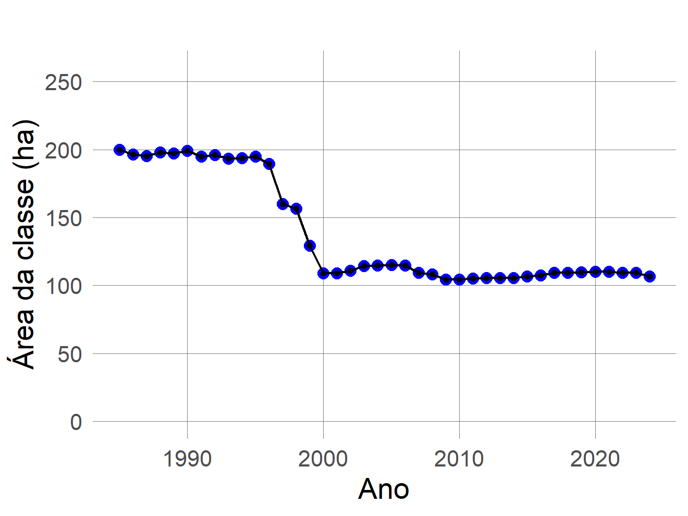
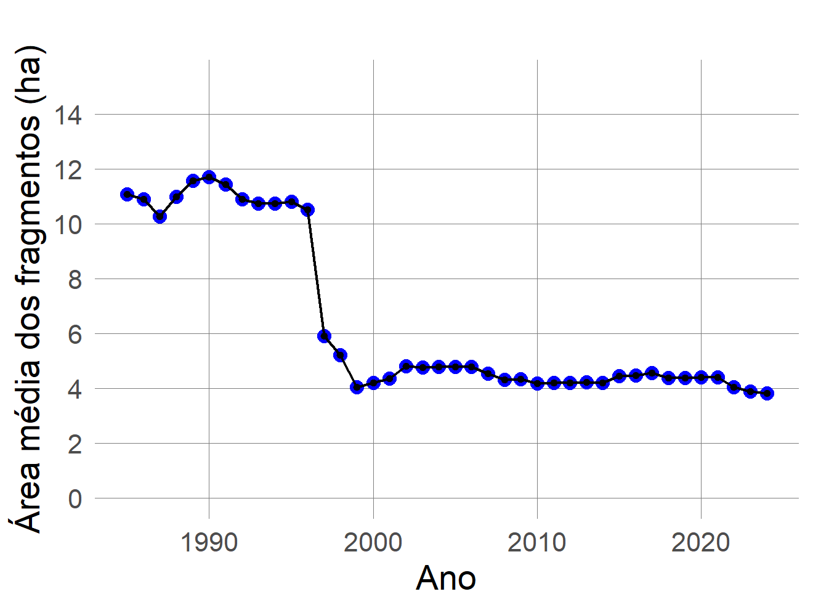
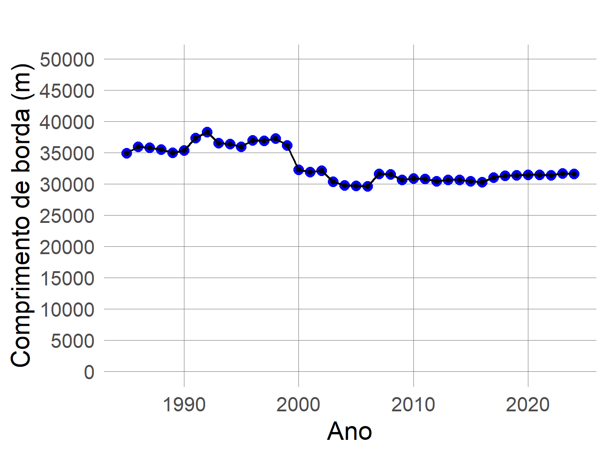
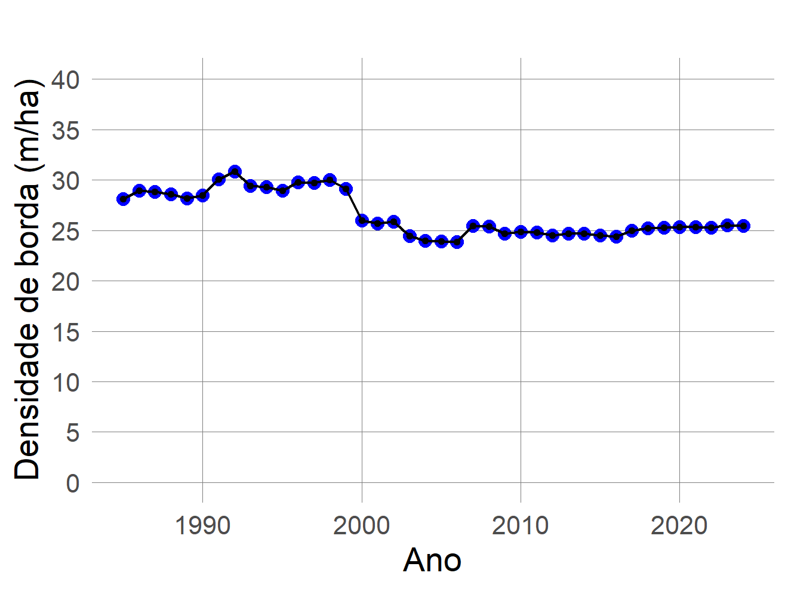
Além de menor, a floresta ficou mais fragmentada: o número de fragmentos passou
de 18 para 28, e o
índice de agregação caiu de 88% para
80%. A tabela completa está em
metricas$metrics_table; para um único mapa, use lulc_metrics().
Com reclass_map(), a classe escolhida aparece em destaque contra o restante
da paisagem:
reclass_map(metricas, year = 1985)
reclass_map(metricas, year = 2024)

Fragmentos
fragment_metrics() desce ao nível de cada fragmento. Para cada um, mede área,
perímetro, área núcleo, forma, dimensão fractal, centroide, alongamento e
distância ao vizinho mais próximo; para cada classe e ano, resume a distribuição
de tamanhos:
fragmentos <- fragment_metrics(mapas, classes = 3, years = c(1985, 2004, 2024))
fragmentos$plots$map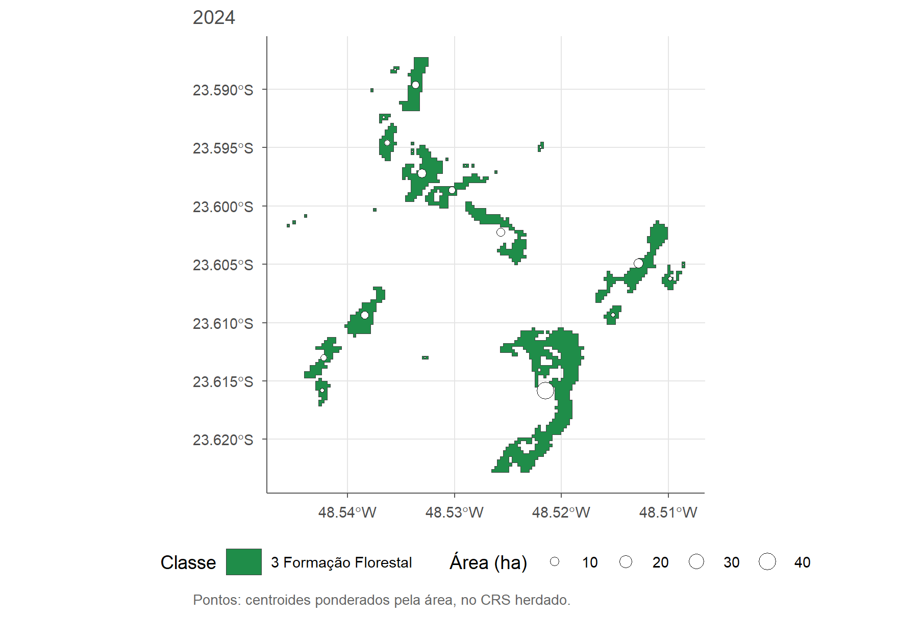
| Ano | Fragmentos | Área (ha) | Área média (ha) | Área mediana (ha) | Maior fragmento (% da paisagem) | Gini | Vizinho mais próximo, mediana (m) |
|---|---|---|---|---|---|---|---|
| 1985 | 18 | 199,74 | 11,10 | 1,35 | 8,59 | 0,80 | 27,46 |
| 2004 | 24 | 114,76 | 4,78 | 0,78 | 3,90 | 0,74 | 46,27 |
| 2024 | 28 | 106,72 | 3,81 | 0,33 | 3,23 | 0,75 | 40,65 |
O fragmento médio encolheu de 11,1 ha para
3,8 ha, e o maior deles, que cobria 8,6% da
paisagem, passou a cobrir 3,2%. A desigualdade de tamanhos
(Gini) continua alta, o que significa que poucos fragmentos concentram a maior
parte da floresta. Os dados de cada fragmento estão em fragmentos$patches.
Tamanho e forma dos fragmentos
Os indicadores do resumo podem ser acompanhados ao longo do tempo num só painel:
fragmentos$plots$trend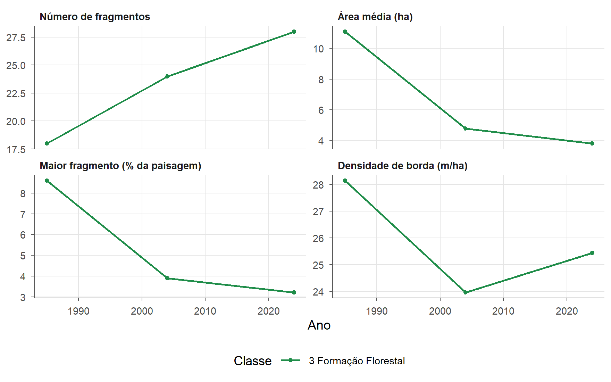
A distribuição de tamanhos e a curva posição-tamanho mostram como a área se concentra: poucos fragmentos grandes e muitos pequenos. O índice de forma (1 para a forma mais compacta) separa os fragmentos compactos dos alongados ou recortados, que têm mais borda por hectare:
fragmentos$plots$size_distribution
fragmentos$plots$rank_size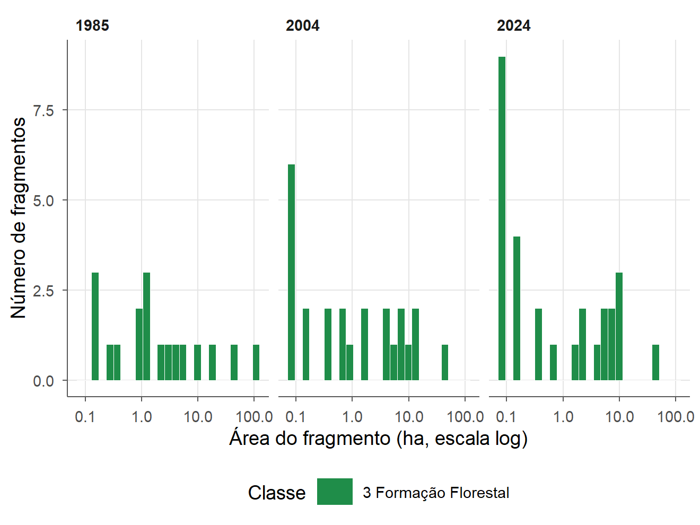
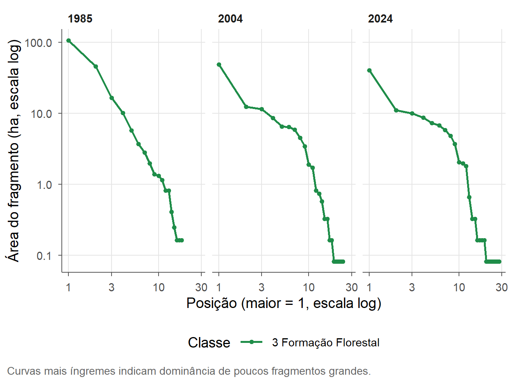
fragmentos$plots$shape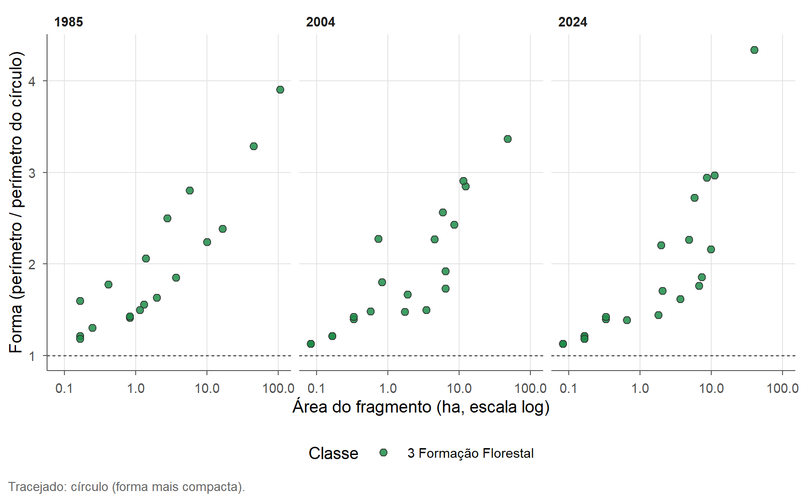
fragmentos$lsm acrescenta métricas de classe do pacote landscapemetrics,
calculadas na mesma grade: agregação (ai), aglomeração (clumpy) e coesão
(cohesion):
| Ano | ai | clumpy | cohesion |
|---|---|---|---|
| 1985 | 88,06 | 0,86 | 96,18 |
| 2004 | 82,98 | 0,81 | 92,92 |
| 2024 | 80,33 | 0,78 | 92,65 |